zone-first v2 - small lots: the six pairwise-different plans per brief
Ranking is the provisional quality score, lower is better: each metric is measured against the band across the user's own plans; a candidate is different from another when their layout families differ or their same-kind area overlap is below 0.7. The user's layouts never steer generation or ranking. Every zone carries its name and size (metres, 1 dp); Flex is hatched with its class, an extension is hatched the other way and labelled "Zone · extension", flex-walls are hatched with a dashed edge, the spine is dotted - nothing relies on colour.
S-01 - 9.0 x 18.0, 3 bed, single garage 9000 x 18000 mm, 3 bed, single garage
valid 924/5504 generated · 718 distinct · 359 mirror images hidden
option 1 (rank 1 of 718)score 17.99 · Flex share 5% · carved: Theatre · circulation 9% · Core 29% · bedroom spread 4.5 m · wet near bed yes · laundry near yes · spine 6.3 m · extensions 0.0 m² · flex m²: room 0.0 · circulation 7.4 · storage 0.0 · sliver 0.0 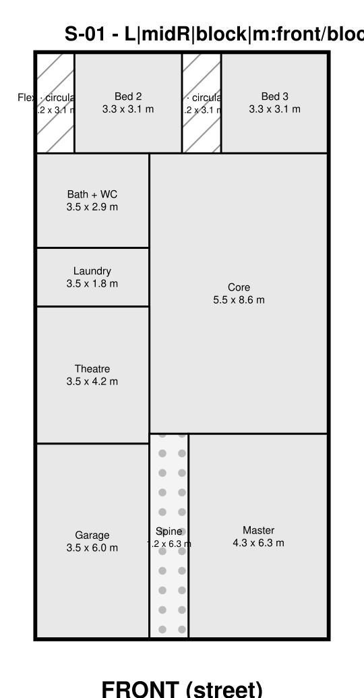
option 2 (rank 11 of 718)score 18.78 · Flex share 7% · carved: Theatre · circulation 11% · Core 25% · bedroom spread 4.5 m · wet near bed yes · laundry near yes · spine 6.0 m · extensions 0.0 m² · flex m²: room 0.0 · circulation 5.1 · storage 7.0 · sliver 0.0 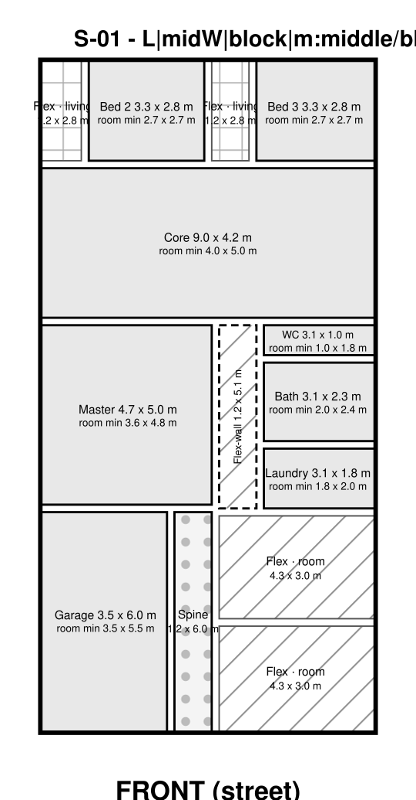
option 3 (rank 15 of 718)score 18.86 · Flex share 10% · carved: Theatre · circulation 14% · Core 26% · bedroom spread 4.5 m · wet near bed yes · laundry near yes · spine 6.0 m · extensions 0.0 m² · flex m²: room 0.0 · circulation 15.0 · storage 1.1 · sliver 0.0 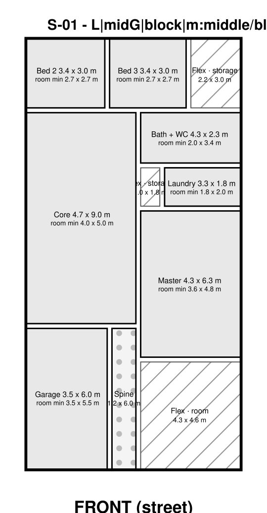
option 4 (rank 17 of 718)score 18.88 · Flex share 7% · carved: Theatre · circulation 15% · Core 26% · bedroom spread 4.5 m · wet near bed yes · laundry near yes · spine 6.0 m · extensions 0.0 m² · flex m²: room 0.0 · circulation 10.8 · storage 0.0 · sliver 0.0 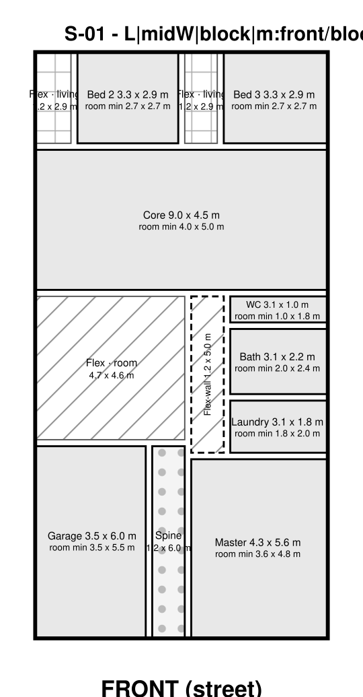
option 5 (rank 93 of 718)score 22.86 · Flex share 13% · carved: Theatre · circulation 14% · Core 23% · bedroom spread 4.5 m · wet near bed yes · laundry near yes · spine 6.0 m · extensions 0.0 m² · flex m²: room 0.0 · circulation 9.2 · storage 12.3 · sliver 0.0 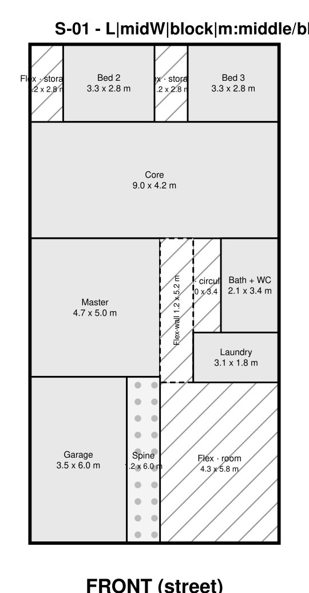
option 6 (rank 325 of 718)score 32.81 · Flex share 11% · carved: Study · circulation 7% · Core 30% · bedroom spread 2.8 m · wet near bed yes · laundry near yes · spine 6.3 m · extensions 0.0 m² · flex m²: room 14.4 · circulation 3.3 · storage 0.0 · sliver 0.0 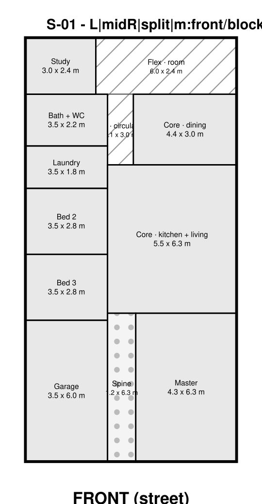
S-02 - 10.5 x 16.0, 3 bed, double garage 10500 x 16000 mm, 3 bed, double garage
valid 622/5504 generated · 392 distinct · 196 mirror images hidden
option 1 (rank 1 of 392)score 12.9 · Flex share 11% · carved: none · circulation 4% · Core 25% · bedroom spread 5.2 m · wet near bed yes · laundry near yes · spine 6.0 m · extensions 0.0 m² · flex m²: room 0.0 · circulation 0.0 · storage 19.1 · sliver 0.0 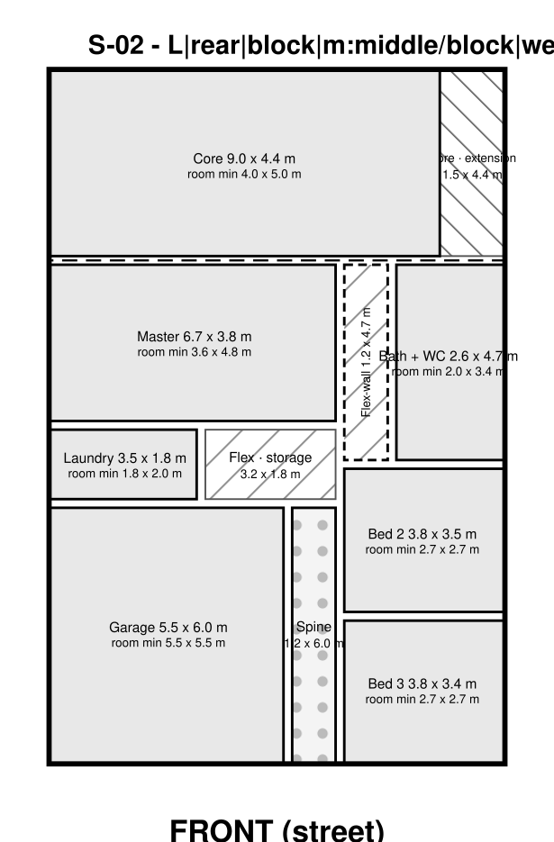
option 2 (rank 7 of 392)score 13.11 · Flex share 12% · carved: Theatre · circulation 4% · Core 26% · bedroom spread 5.2 m · wet near bed yes · laundry near yes · spine 6.0 m · extensions 6.2 m² · flex m²: room 8.3 · circulation 0.0 · storage 11.8 · sliver 0.0 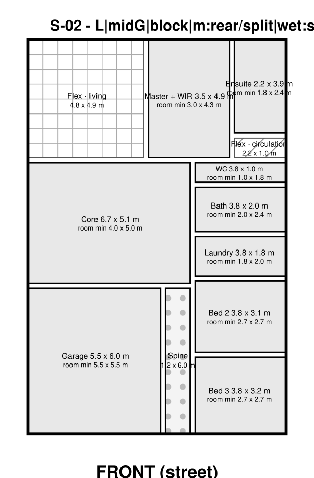
option 3 (rank 13 of 392)score 15.34 · Flex share 11% · carved: Study · circulation 10% · Core 19% · bedroom spread 5.2 m · wet near bed yes · laundry near yes · spine 6.4 m · extensions 0.0 m² · flex m²: room 0.0 · circulation 0.0 · storage 19.1 · sliver 0.0 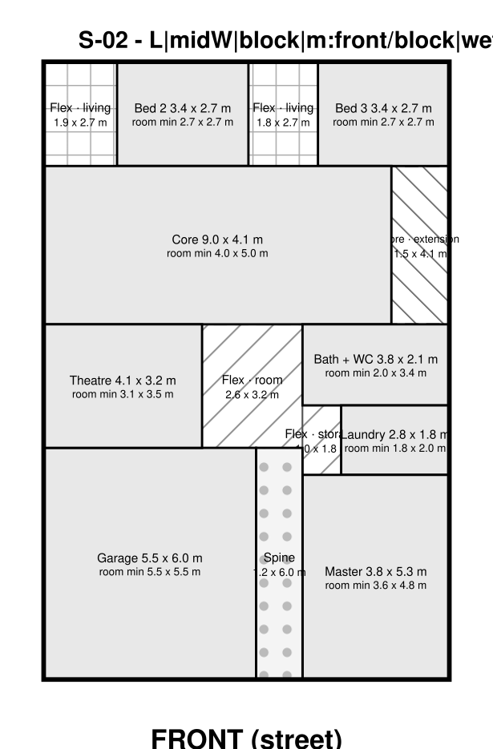
option 4 (rank 41 of 392)score 22.84 · Flex share 3% · carved: none · circulation 8% · Core 28% · bedroom spread 3.5 m · wet near bed yes · laundry near yes · spine 6.0 m · extensions 6.6 m² · flex m²: room 0.0 · circulation 0.0 · storage 5.8 · sliver 0.0
option 5 (rank 75 of 392)score 28.35 · Flex share 7% · carved: Theatre · circulation 8% · Core 20% · bedroom spread 3.0 m · wet near bed yes · laundry near yes · spine 6.0 m · extensions 0.0 m² · flex m²: room 0.0 · circulation 6.0 · storage 5.3 · sliver 0.0 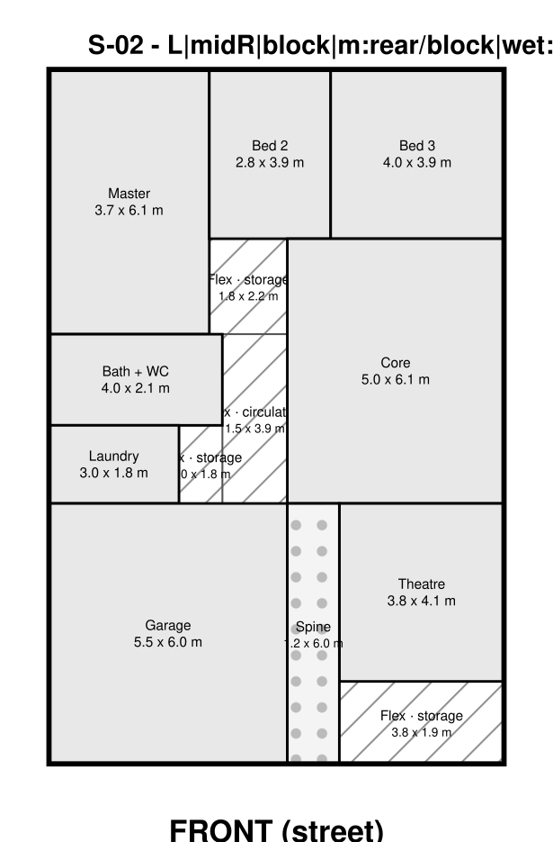
option 6 (rank 80 of 392)score 28.85 · Flex share 5% · carved: Theatre · circulation 12% · Core 21% · bedroom spread 2.7 m · wet near bed yes · laundry near yes · spine 6.0 m · extensions 0.0 m² · flex m²: room 0.0 · circulation 5.6 · storage 2.6 · sliver 0.0 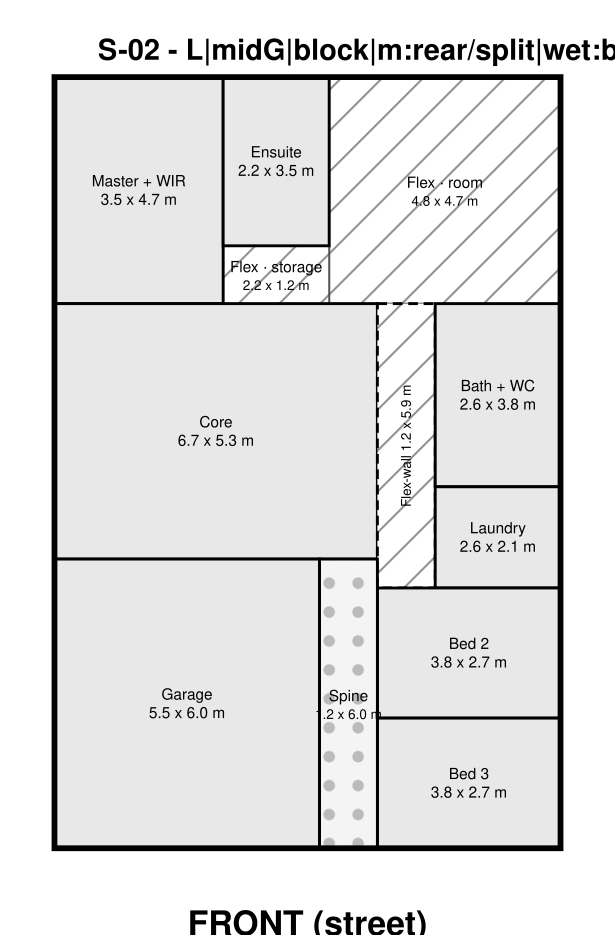
S-03 - 7.5 x 22.0 narrow, 3 bed, single garage 7500 x 22000 mm, 3 bed, single garage
valid 302/5504 generated · 206 distinct · 103 mirror images hidden
option 1 (rank 1 of 206)score 22.63 · Flex share 6% · carved: Guest bed, Study · circulation 9% · Core 26% · bedroom spread 4.0 m · wet near bed yes · laundry near yes · spine 6.0 m · extensions 0.0 m² · flex m²: room 0.0 · circulation 7.4 · storage 1.8 · sliver 0.0 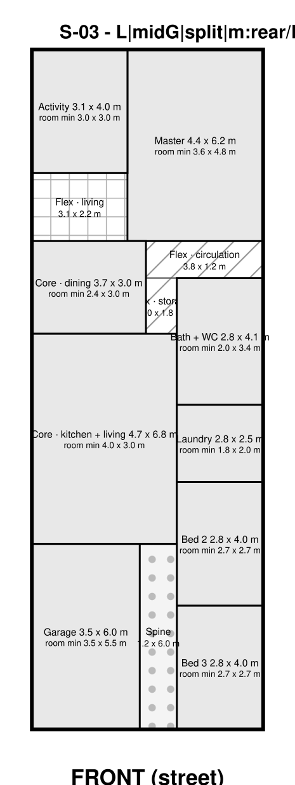
option 2 (rank 13 of 206)score 26.14 · Flex share 13% · carved: Guest bed · circulation 6% · Core 26% · bedroom spread 3.6 m · wet near bed yes · laundry near yes · spine 6.0 m · extensions 0.0 m² · flex m²: room 19.2 · circulation 3.0 · storage 0.0 · sliver 0.0 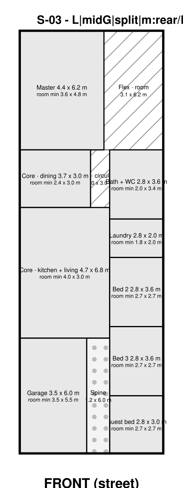
option 3 (rank 33 of 206)score 26.79 · Flex share 3% · carved: Guest bed, Activity, Study · circulation 4% · Core 25% · bedroom spread 2.9 m · wet near bed yes · laundry near yes · spine 6.0 m · extensions 0.0 m² · flex m²: room 0.0 · circulation 0.0 · storage 5.3 · sliver 0.0
option 4 (rank 39 of 206)score 28.35 · Flex share 11% · carved: Theatre, Guest bed · circulation 8% · Core 22% · bedroom spread 3.1 m · wet near bed yes · laundry near yes · spine 6.0 m · extensions 0.0 m² · flex m²: room 0.0 · circulation 6.4 · storage 12.3 · sliver 0.0 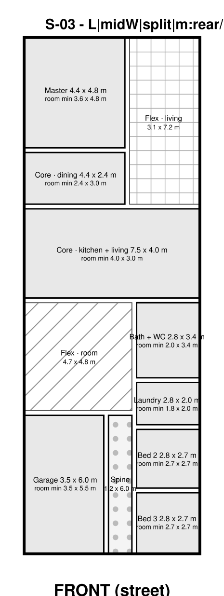
option 5 (rank 83 of 206)score 29.33 · Flex share 6% · carved: Theatre, Guest bed, Study · circulation 10% · Core 25% · bedroom spread 2.7 m · wet near bed yes · laundry near yes · spine 6.0 m · extensions 0.0 m² · flex m²: room 0.0 · circulation 9.1 · storage 0.0 · sliver 0.0 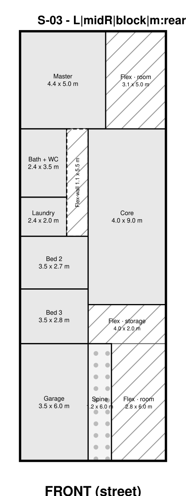
option 6 (rank 125 of 206)score 30.15 · Flex share 14% · carved: Guest bed, Study · circulation 8% · Core 22% · bedroom spread 2.8 m · wet near bed yes · laundry near yes · spine 6.0 m · extensions 0.0 m² · flex m²: room 15.5 · circulation 0.0 · storage 8.0 · sliver 0.0 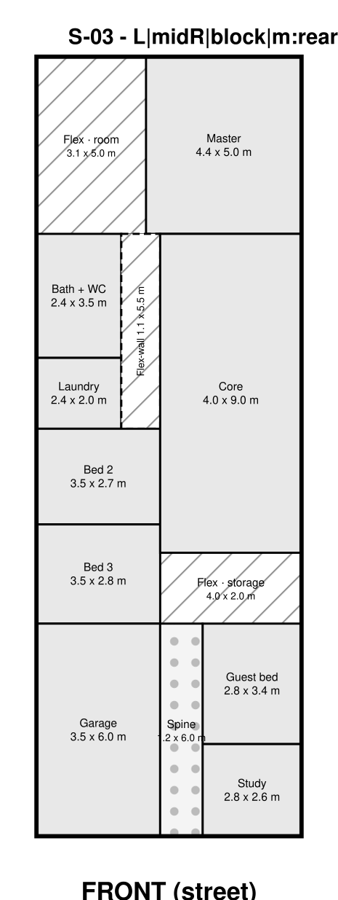
S-04 - 9.5 x 16.0, 2 bed, single garage 9500 x 16000 mm, 2 bed, single garage
valid 268/1472 generated · 184 distinct · 92 mirror images hidden
option 1 (rank 1 of 184)score 10.64 · Flex share 5% · carved: Guest bed · circulation 10% · Core 34% · bedroom spread 0.0 m · wet near bed yes · laundry near yes · spine 6.0 m · extensions 5.5 m² · flex m²: room 0.0 · circulation 8.1 · storage 0.0 · sliver 0.0 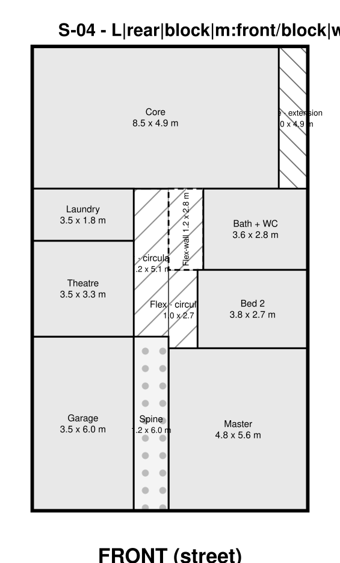
option 2 (rank 5 of 184)score 12.59 · Flex share 12% · carved: Theatre · circulation 17% · Core 26% · bedroom spread 0.0 m · wet near bed yes · laundry near yes · spine 6.0 m · extensions 4.1 m² · flex m²: room 0.0 · circulation 13.6 · storage 5.0 · sliver 0.0 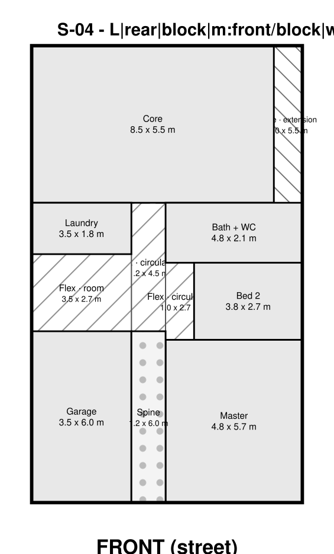
option 3 (rank 17 of 184)score 15.77 · Flex share 12% · carved: Theatre, Guest bed · circulation 12% · Core 17% · bedroom spread 0.0 m · wet near bed yes · laundry near yes · spine 6.0 m · extensions 0.0 m² · flex m²: room 0.0 · circulation 5.5 · storage 12.3 · sliver 0.0 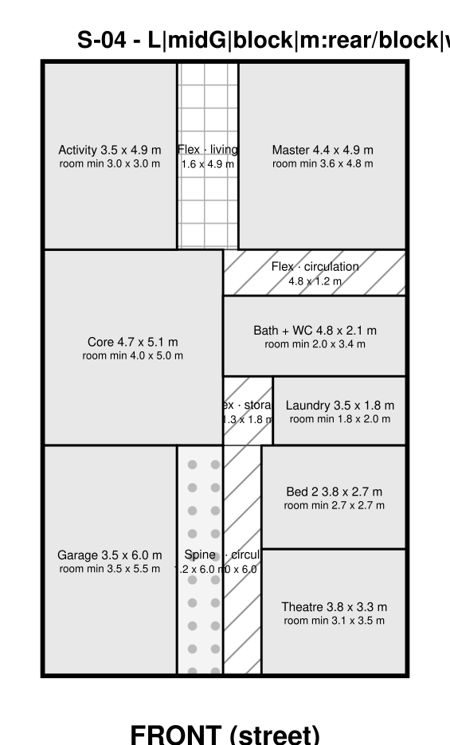
option 4 (rank 27 of 184)score 19.47 · Flex share 12% · carved: Theatre, Study · circulation 19% · Core 16% · bedroom spread 0.0 m · wet near bed yes · laundry near yes · spine 6.0 m · extensions 0.0 m² · flex m²: room 0.0 · circulation 15.8 · storage 2.8 · sliver 0.0 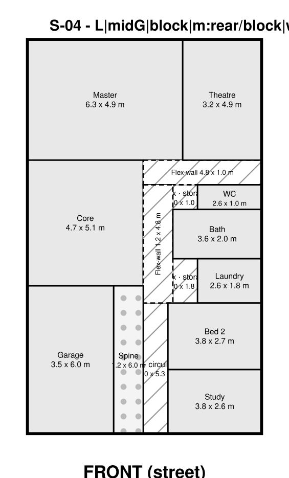
option 5 (rank 31 of 184)score 20.58 · Flex share 10% · carved: Study · circulation 5% · Core 30% · bedroom spread 0.0 m · wet near bed yes · laundry near yes · spine 6.0 m · extensions 0.0 m² · flex m²: room 15.6 · circulation 0.0 · storage 0.0 · sliver 0.0 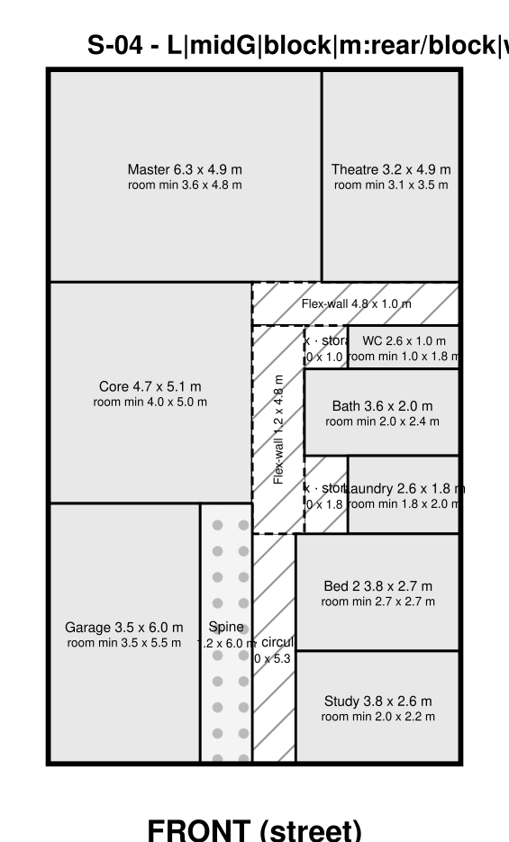
option 6 (rank 41 of 184)score 20.87 · Flex share 14% · carved: Study · circulation 7% · Core 24% · bedroom spread 0.0 m · wet near bed yes · laundry near yes · spine 6.0 m · extensions 0.0 m² · flex m²: room 15.6 · circulation 3.1 · storage 2.6 · sliver 0.0 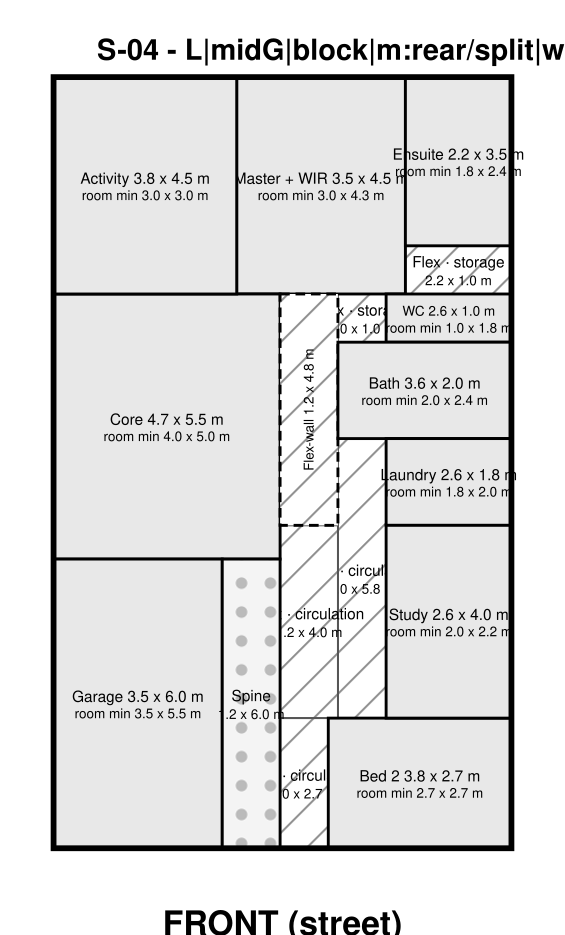
S-05 - 10.0 x 20.0, 3 bed, double garage 10000 x 20000 mm, 3 bed, double garage
valid 842/5504 generated · 638 distinct · 319 mirror images hidden
option 1 (rank 1 of 638)score 17.27 · Flex share 7% · carved: Theatre · circulation 7% · Core 29% · bedroom spread 5.0 m · wet near bed yes · laundry near yes · spine 6.0 m · extensions 5.8 m² · flex m²: room 0.0 · circulation 0.0 · storage 14.2 · sliver 0.0 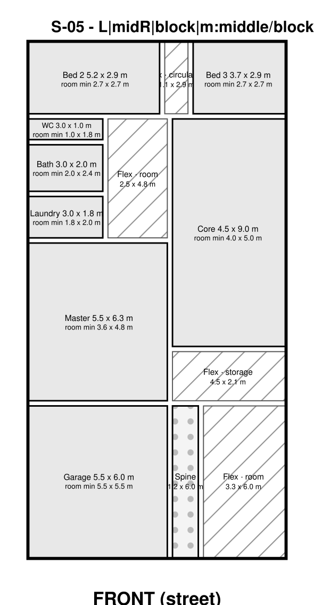
option 2 (rank 9 of 638)score 17.75 · Flex share 12% · carved: Theatre, Study · circulation 7% · Core 24% · bedroom spread 5.0 m · wet near bed yes · laundry near yes · spine 6.0 m · extensions 0.0 m² · flex m²: room 0.0 · circulation 0.0 · storage 24.5 · sliver 0.0 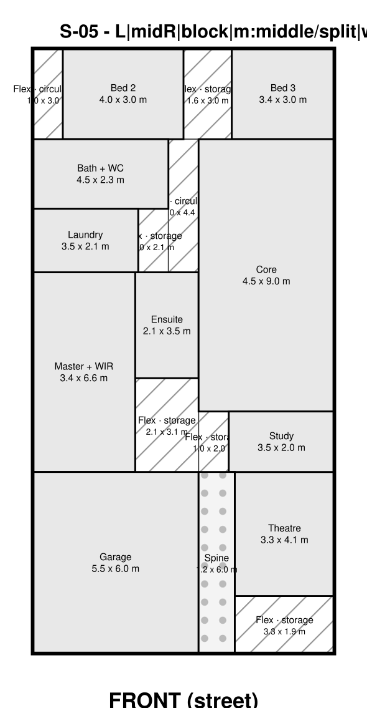
option 3 (rank 71 of 638)score 25.08 · Flex share 13% · carved: Theatre, Study · circulation 6% · Core 24% · bedroom spread 3.6 m · wet near bed yes · laundry near yes · spine 6.0 m · extensions 0.0 m² · flex m²: room 12.9 · circulation 4.1 · storage 9.4 · sliver 0.0 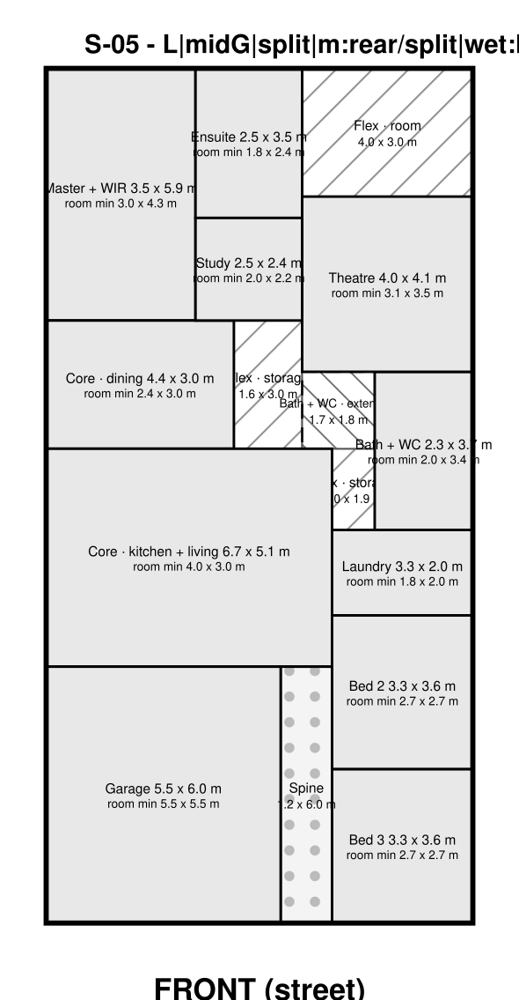
option 4 (rank 91 of 638)score 25.92 · Flex share 4% · carved: Theatre · circulation 7% · Core 33% · bedroom spread 3.3 m · wet near bed yes · laundry near yes · spine 6.0 m · extensions 6.5 m² · flex m²: room 8.8 · circulation 0.0 · storage 0.0 · sliver 0.0 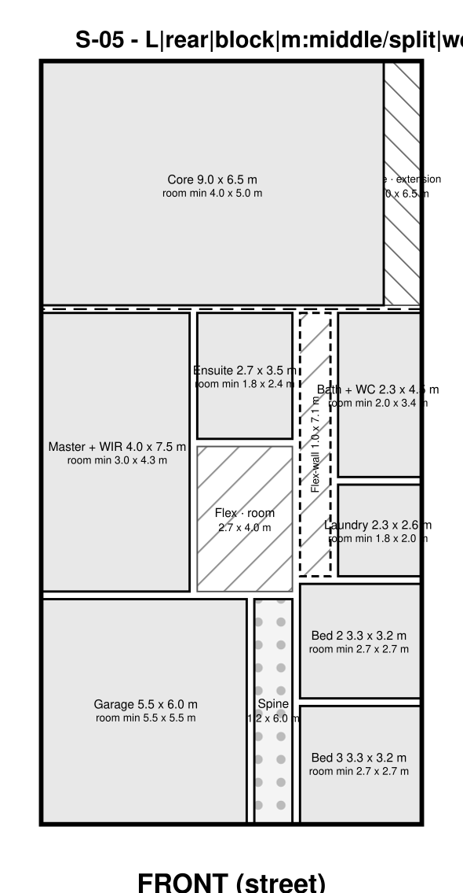
option 5 (rank 119 of 638)score 27.22 · Flex share 10% · carved: Theatre, Study · circulation 13% · Core 23% · bedroom spread 3.4 m · wet near bed yes · laundry near yes · spine 6.0 m · extensions 0.0 m² · flex m²: room 0.0 · circulation 11.8 · storage 8.2 · sliver 0.0 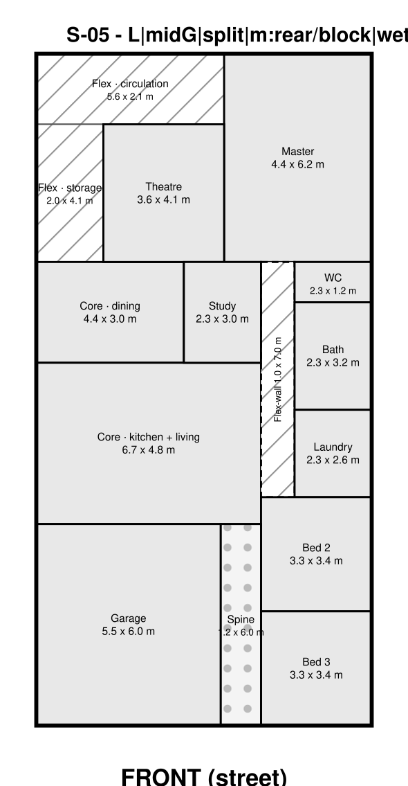
option 6 (rank 185 of 638)score 28.48 · Flex share 6% · carved: Theatre, Guest bed, Activity · circulation 8% · Core 21% · bedroom spread 2.8 m · wet near bed yes · laundry near yes · spine 6.0 m · extensions 4.2 m² · flex m²: room 0.0 · circulation 4.0 · storage 8.0 · sliver 0.0 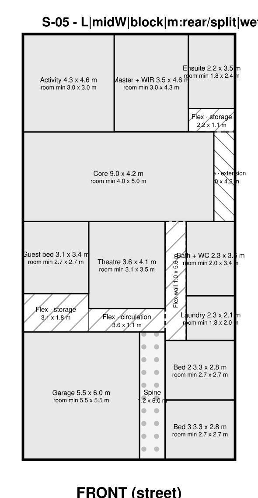